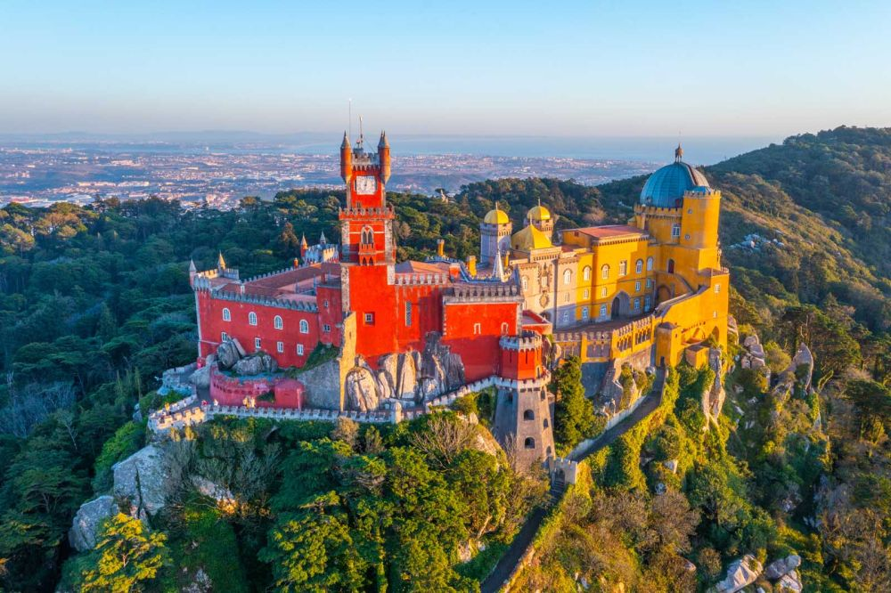

Explorați Sintra - O călătorie în orașul fermecat
Sintra este un oraș cu aer magic, plin de castele și peisaje de basm, oferind o varietate de atracții captivante pentru vizitatori:
-

Palatul Național - Bijuterie istorică
Acest palat impresionant se ridică pe coline și oferă vederi spectaculoase asupra orașului și împrejurimilor.
-

Castelul Mouros - Cetate istorică
Această cetate fortificată oferă o priveliște panoramică asupra regiunii și surprinde cu zidurile sale vechi.
-

Palatul Pena - Culori și arhitectură unică
Un palat de basm ce combină elemente arhitecturale diverse, culori vibrante și priveliști impresionante.
-

Quinta da Regaleira - Mistere și labirinturi
Grădini, turnuri și peșteri ascundecreate în acest conac cu un aer misterios și învăluit în mituri.
-

Parcul Natural Serra de Sintra - Natură și explorare
Această zonă protejată oferă trasee de drumeții, peisaje pitorești și biodiversitate excepțională.
Concluzii
Sintra vă ademenește în lumea poveștilor cu palatele sale fermecătoare și peisajele de vis.